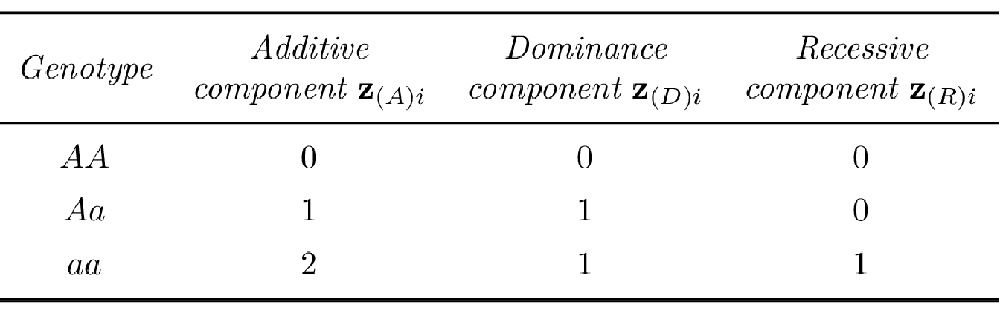

3.4 Single Marker Analysis
The standard statistical method to identify variants associated with a disease is to test the effect of each SNP one at a time using standard hypothesis testing methods. The goal is to identify genetic variants statistically associated with the phenotype, these variants being themselves in linkage disequilibrium with a potential causal polymorphism. Here we will review some of the most commonly used tests.
3.4.1 Pearson’s \(\chi^2\) statistic
The expected value under the independence hypothesis of the genotype count \(n_{ij}\), as defined in Table 3.2, is noted as:
\[\mathbb{E}(n_{ij}) = \frac{n_{i.} n_{.j}}{N}.\]
It is thus possible to construct a genotypic association test by testing the independence between the rows and columns of the contingency table using the standard Pearson’s \(\chi^2\) statistic for independence given by:
\[\chi^2_{genotypic} = \sum_{i=[0,1,2]} \sum_{j = [0,1]} \frac{(n_{ij} - \mathbb{E}(n_{ij}))^2}{\mathbb{E}(n_{ij})}.\]
This genotypic association test statistic has an approximate \(\chi^2\) distribution with 2 degrees of freedom (d.f.) under the null hypothesis \(H_0\) of independence between the rows and columns of the contingency table.
As shown in Table 3.1, it is also possible to consider alternative models of penetrance by focusing on allele count rather than genotype count. In this situation the allelic association test is performed using a \(2 \times 2\) contingency table and its associated \(\chi^2\) statistic is defined as:
\[\chi^2_{allelic} = \sum_{i=[0,1]} \sum_{j = [0,1]} \frac{(m_{ij} - \mathbb{E}(m_{ij}))^2}{\mathbb{E}(m_{ij})}.\]
This allelic association test, which have 1 d.f., will be more powerful than the genotypic test with 2 d.f., as long as the penetrance of the heterozygote genotype is intermediate compared to those of the two homozygous genotypes (Clarke et al. 2011).
3.4.2 Cochran-Armitage trend test
Any penetrance model specifying a trend in risk with increasing numbers of alleles \(a\) can be examined using the Cochran-Armitage trend test (Cochran 1954; Armitage 1955) given by: \[\chi^2_{CA} = \dfrac{ \left[ \sum_{i=0}^2 w_i(n_{.1}n_{2.} - n_{.2}n_{1.}) \right]^2}{\frac{n_{1.}n_{2.}}{n} \left[ \sum_{i=0}^2 w_i^2n_{.i}(n-n_{.i}) - 2\sum_{j=0}^1\sum_{i=j+1}^2 w_j w_i n_{.j} n_{.i} \right]}, \label{eq:CAtrend}\] where \(w = (w_0,w_1,w_2)\) are weights chosen to detect particular types of association. For instance, with a dominant model \(w = (0,1,1)\) is optimal while for a recessive model weights $ w=(0,0,1) $ are rather chosen.
Under the null hypothesis of no association between the SNP and disease (\(H_0:\) independence between rows and columns of the contingency table), \(\chi^2_{CA}\) has an approximate \(\chi^2\) distribution with 1 d.f.. The power of this test is often improved as long as the disease risks associated with the \(A/a\) genotype are intermediate to those associated with the \(a/a\) and \(A/A\) genotypes. In GWAS, in which the underlying genetic model is unknown, the additive version of this test, i.e. with \(w = (0,1,2)\), is most commonly used.
3.4.3 Logistic regression and likelihood ratio test
Another possible framework for modelling the relationship between a case-control phenotype and SNP genotype is to use the logistic regression model, as described in Section 2.3.3. The logistic regression model is parametrised in terms of the log-odds of disease for each SNP genotype, denoted by \(\boldsymbol{\beta}\). The log-likelihood of observed phenotype data, \(\mathbf{y}\) and genotype data \(\mathbf{G}\), is given by:
\[l(\mathbf{y} | \mathbf{G},\boldsymbol{\beta}) = \sum_{i=1}^n \left[ y_i \log \left( \frac{e^{\eta_i}}{1+e^{\eta_i}}\right) + (1-y_i)\log \left( 1 - \frac{e^{\eta_i}}{1+e^{\eta_i}} \right) \right],\] where the linear predictor \(\eta_i = \beta_0 + \beta g_i\).
Under the null hypothesis of no association \(H_0: \boldsymbol{\beta} = 0\) , we expect each genotype to have equal odds of disease, so that \(\eta_i = \beta_0\). Under the additive model and treating allele \(A\) as baseline, the linear predictor becomes:
\[\eta_i = \beta_0 + \beta_A z_{(A)i},\] where \(\beta_A\) corresponds to the additive effect of allele \(a\) and \(z_{(A)i}\) is a variable representing the additive component of the \(i\)th genotype (see Table 3.3 for the SNP coding in different disease penetrance models).
In this framework, tests of association can be conducted with likelihood ratio (LR) methods in which inference is based on the likelihood of the genotyped data given disease status. The likelihood of the observed data under the proposed model of disease association is compared with the likelihood of the observed data under the null model of no association. For example, the log-likelihood ratio statistics,
\[\Lambda_{Gen} = l(\mathbf{y} | \mathbf{G},\hat{\beta}_0,\hat{\beta}_A) - 2 l(\mathbf{y} | \mathbf{G},\hat{\beta}_0,\hat{\beta}_A = 0),\] provides a genotype-based test of association which have an approximate \(\chi^2\) distribution with 2 d.f. under the null hypothesis. In large samples, it can be shown that \(\chi^2\) and LR methods are equivalent under the null hypothesis (Rice 2006).
Furthermore, by using the flexible logistic regression framework, it is straightforward to incorporate additional covariates in the linear component, to allow the modelisation of environmental effects or to correct for population structure as we will see in the following section. The linear predictor \(\eta_i\) can thus be extend to:
\[\eta_i = \beta_0 + \sum_{j=1}^p \alpha_j x_{ij} + \beta_A z_{(A)i},\] where \(x_{ij}\) is the response of the \(i^{th}\) individual to the \(j^{th}\) covariate and \(\alpha_j\) its corresponding coefficient. Covariate adjustment reduces spurious associations due to sampling artefacts or biases in study design, but adjustment comes at the price of using additional degrees of freedom which may impact statistical power.
References
Clarke, Geraldine M, Carl A Anderson, Fredrik H Pettersson, Lon R Cardon, Andrew P Morris, and Krina T Zondervan. 2011. “Basic Statistical Analysis in Genetic Case-Control Studies.” Nature Protocols 6 (2): 121.
Cochran, William G. 1954. “Some Methods for Strengthening the Common \(\chi\) 2 Tests.” Biometrics 10 (4): 417–51.
Armitage, Peter. 1955. “Tests for Linear Trends in Proportions and Frequencies.” Biometrics 11 (3): 375–86.
Rice, John A. 2006. Mathematical Statistics and Data Analysis. Cengage Learning.